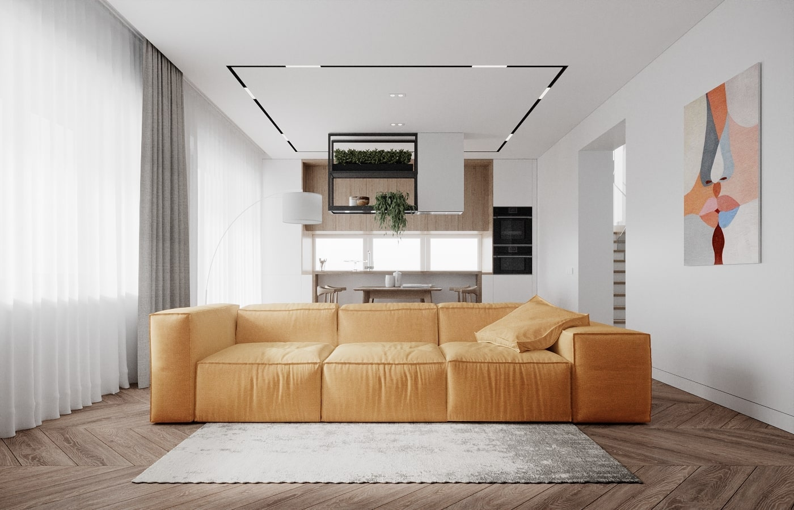
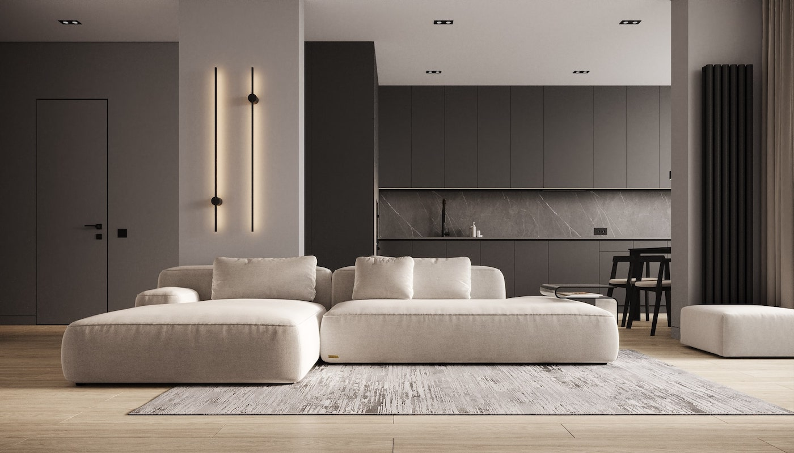
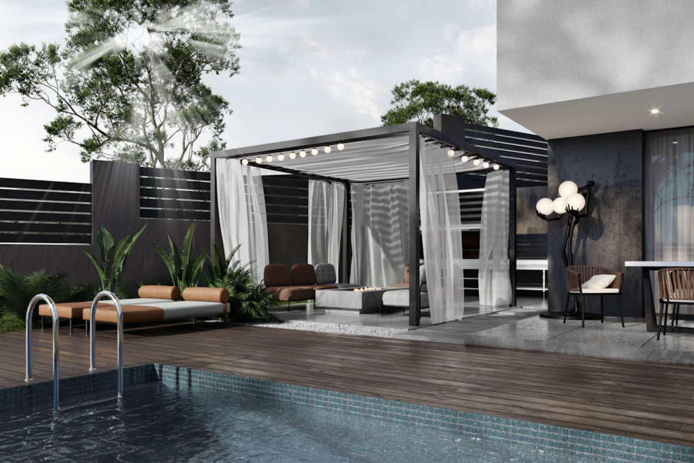

ARCHITECTS -
СУЧАСНИЙ ДИЗАЙН ІНТЕР'ЄРУ
ТА РЕАЛІЗАЦІЯ ПРОЕКТІВ «ПІД КЛЮЧ»

НАШ РОБОЧИЙ ПРОЦЕС
Основні принципи, що ми закладаємо у кожен проект, складаються з двох груп факторів –
естетично-ергономічні та
психологічно-організаційні:
- Перша група факторів включає в себе роботу з архітектурними пропорціями, тенденціями ринку та обов’язкове відслідковування змін у модних сучасних тенденціях та смаках споживачів.
- Друга група включає у себе розробку на нашій базі спеціальних техніко-архітектурних інструментів опитування та аналізу отриманої від Клієнта інформації, опираючись на яку, можна максимально швидко і з мінімальною кількістю зауважень та виправлень виконати якісний архітектурний проект або дизайн-проект та, не зволікаючи, приступати до його втілення. У цьому моменті настає найцікавіше, адже дуже хочеться максимально реалістично виконати проект, у стислі терміни та ще й так, щоб він мав високу якість виконання.
Саме з цією метою ми регулярно виконуємо авторський нагляд та будівельний контроль запроектованих нами об’єктів та передбачаємо наперед усі загрози, що можуть виникнути.
Студія дизайну інтер’єру «Architects» створить для Вас інтер’єр Вашої мрії. Вишуканий смак, нестандартний підхід, креативне мислення – ось запорука неповторності Вашого помешкання. Наші проекти дизайну інтер’єру – це затишок та комфорт.
Отож, вітаємо на нашому сайті та запрошуємо до віртуальної подорожі нашими галереями!
ПРО НАШУ КОМПАНІЮ
Команда архітектурної компанії «Architects» росла і формувалась не один рік. Уже понад 13 років ми пропонуємо своїм Клієнтам професійний комплекс послуг з проектування житлового простору, дизайну інтер’єру та розробки комплексних конструкторських вирішень.
Зараз наша команда налічує більше 25 висококласних фахівців – дизайнерів, архітекторів та конструкторів, - здатних задовольнити бажання будь-якого, навіть найвибагливішого, Клієнта. Hаші працівники постійно підвищують свій рівень якості проектування, навчаються новим об’ємно-просторовим вирішенням інтер’єрів і архітектурному проектуванню за найновітнішими технологіями.
НАША КОМАНДА
Це спеціалісти, які виконують широкий спектр робіт. Це інженерні мережі,ремонтні роботи,вітражі, декоративні оздоблювальні штукатурки, розпис, натяжні полотна, освітлення, шпалери, двері, гіпсова ліпнина, ковка тощо…Деякі з цих членів команди працюють з нами на протязі усього часу існування нашої команди. До того ж дехто з них відомі своїми роботами як і у нас в Україні так і за кордоном.
Щоб створити справді красивий інтер’єр і отримати задоволення від ремонту варто повністю довіритись нашій професійній команді. Адже великий багаж знань, вже передбачає наперед з чим ми стикнемось, як це все вирішити, як передбачити мінімальні нюанси в монтажі різних конструкцій і систем, щоб досягнути бажаного і якісного результату. Щоб Ви як наш замовник були задоволені!
НAШІ ПЕРЕВАГИ
Виконуємо проекти для:
- Житлового фонду;
- Комерційних приміщень;
- Промислових об'єктів.
Напрямки роботи:
- Архітектура;
- Дизайн інтер’єру;
- Інженерні конструкції.
ГОТОВІ ПРАЦЮВАТИ З НАМИ?
НАПИШІТЬ НАМ І ВИ БУДЕТЕ ПРИЄМНО ЗДИВОВАНІ ЯКІСТЮ ПРОЕКТНИХ РОБІТ ТА ОСОБЛИВИМ ПІДХОДОМ ДО БУДЬ-ЯКИХ АРХІТЕКТУРНИХ ТА ДИЗАЙНЕРСЬКИХ РІШЕНЬ!
